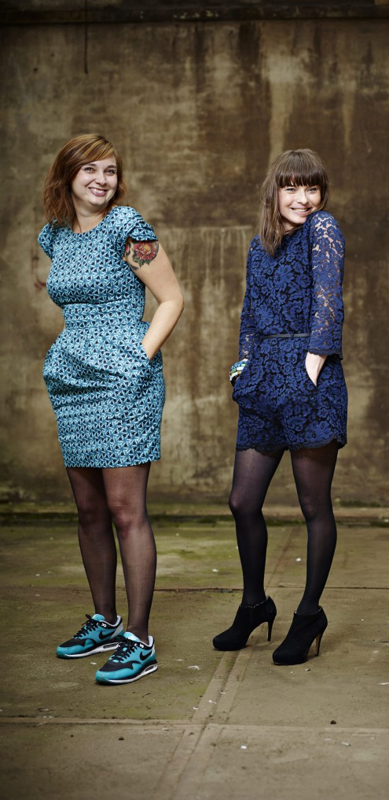

Toon maakt samen met de leerling een lesplan. Aangepast op het niveau en de wensen van de leerling zodat deze met veel plezier en motivatie gitaar kan leren spelen. Voor Toon begint het plezier met het maken van muziek, en dat gebeurt dan ook vanaf les 1!
kinderen, jongeren, volwassenen. Ook met een lichamelijke en/of verstandelijke beperking ben je meer dan welkom. Je kunt de les individueel of in een duo volgen.
Je zou de ukelele bijna omschrijven als het ideale instrument. Niet alleen omdat hij makkelijk is om mee
te nemen, maar ook omdat hij vrij eenvoudig te bespelen is. Daarnaast kan vrijwel niemand zijn
glimlachen inhouden bij de vrolijke klank die het instrument maakt, mits deze natuurlijk goed bespeeld
wordt.
Met dit in het achterhoofd bieden wij ukelele-lessen aan. Deze worden per leerling of duo op maat
aangepast. Dus mocht je al een instrument bespelen, of al ervaring hebben met de ukelele dan zullen we
starten op jouw niveau. Ben je echter een volledige muzikale leek, dan zullen we gewoon bij het begin
beginnen. We werken niet met een bestaande methode maar met losse, veelal bekende, liedjes die elke les
een stukje moeilijker worden.
Je leert in eerste instantie akkoorden spelen, ritmes lezen of horen en daarnaast hoe je zelf liedjes op
internet kan opzoeken en vervolgens op je ukelele kan spelen. Hierdoor ben je binnen no time in staat
een
groot deel van je favoriete liedjes ten gehore te brengen.
Mocht je de smaak dan te pakken hebben kunnen we ons op ingewikkeldere zaken gaan richten. Hierbij moet
je
denken aan zaken als tokkelen, toonladders, versieringen aan akkoorden toevoegen of bijvoorbeeld
ingewikkelde ritmes spelen.